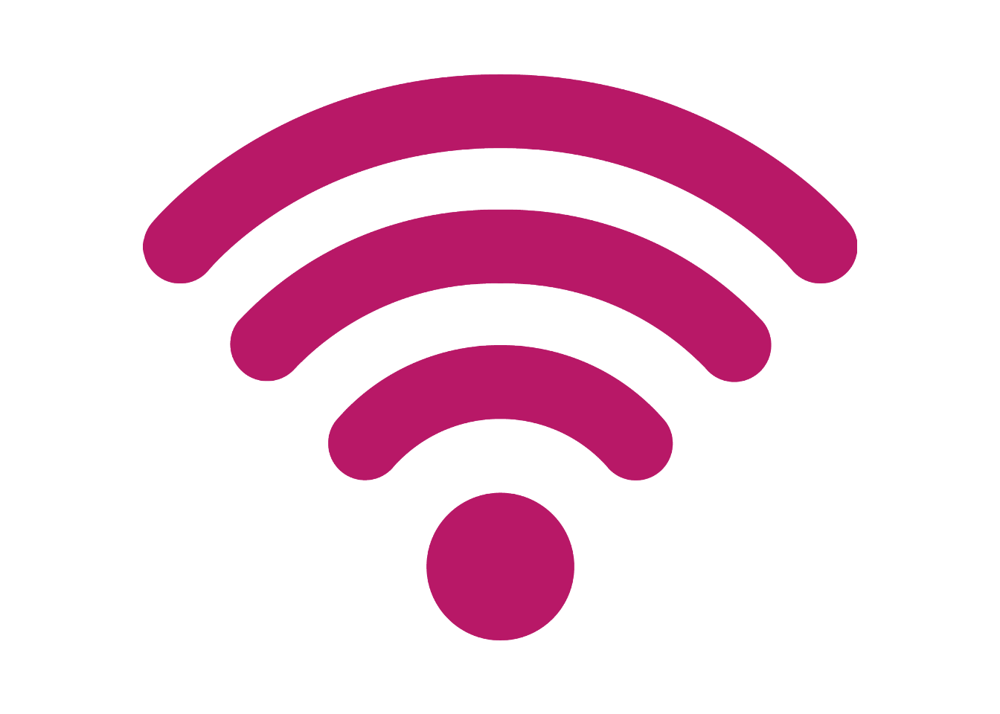
Bredband och Internet
Läget i Länet 2026 · Regional utveckling
Publicerad: mars 2026. Nästa uppdatering planeras till våren 2027.
Inledning
Tillgång till snabb och stabil digital infrastruktur är en grundläggande förutsättning för samhällsutveckling, näringsliv, offentlig service och invånarnas vardag. Bredband och mobil kommunikation spelar en central roll för såväl arbete och studier som för vård, omsorg och social delaktighet. Samtidigt varierar tillgången till digital infrastruktur mellan olika geografiska områden, inte minst mellan tätbebyggda områden och glesbygd.
Denna rapport ger en samlad och aktuell bild av bredbands- och mobiltäckningen i länets kommuner, med fokus på utvecklingen över tid och skillnader mellan kommuner och områdestyper. Analysen omfattar både fast bredband och mobila nät, samt tillgång till olika tekniker såsom fiber, kabel-tv, LTE och 5G. Där det är relevant redovisas både andel hushåll och antal hushåll med tillgång, för att belysa såväl täckningsgrad som faktisk omfattning.
Alla interaktiva grafer kan laddas ned genom att trycka på  . Då sparas just den bild som visas, med exempelvis den valda regionen. Genom att dubbelklicka på kommunnamn i grafens legend så zoomas den kommunen in för en mer detaljerad vy(flera kan väljas samtidigt).
. Då sparas just den bild som visas, med exempelvis den valda regionen. Genom att dubbelklicka på kommunnamn i grafens legend så zoomas den kommunen in för en mer detaljerad vy(flera kan väljas samtidigt).
Bredband
Regeringens mål för 2025, ofta kallat ”2025-målet”, syftar till att säkerställa bredbandstillgång för alla hushåll och företag i Sverige. Målet består av tre delmål som alla måste uppfyllas för att det övergripande målet ska anses vara uppnått:
98 % av hushåll och företag ska ha tillgång till bredbandsinfrastruktur som möjliggör minst 1 Gbit/s, antingen genom faktisk anslutning eller i direkt närhet till infrastrukturen.
1,9 % av resterande hushåll och företag ska ha tillgång till minst 100 Mbit/s.
0,1 % av resterande hushåll och företag ska ha tillgång till minst 30 Mbit/s.
Tillgång eller anslutningsmöjlighet till 1 gb/s
Här visas andel av områdets hushåll som har tillgång till bredband om minst 1 gigabit per sekund, eller fiber i absolut närhet. Måttet inkluderar tillgång till fiber och kabel-tv-nät (DOCSIS 3) samt hushåll och arbetsställen som bedöms ligga i direkt närhet till en fiberanslutning.
Tillgång definieras som att:
- faktisk anslutning finns,
- anslutning kan beställas till en kostnad om högst 40 000 kronor, eller
- hushållet eller arbetsstället bedöms ligga i absolut närhet till fiber.
Data är hämtat från Rådet för främjande av kommunala analyser (2025) som hänvisar vidare till Post- och telestyrelsen (PTS) (2025).
PTS samlar in underlag om täckning för olika accesstekniker från berörda aktörer. Underlaget matchas mot Fastighetsregistret och kompletteras med antaganden som ligger till grund för kartläggningen. För tillgång till mycket höga hastigheter, upp till 1 Gbit/s under gynnsamma förhållanden och minst 500 Mbit/s i högtrafik, krävs i dag trådbundna accesstekniker, såsom fiber- eller kabel-tv-nät.
Uppgifterna avser situationen den 1 oktober respektive år. Till och med 2014 avsågs befolkning i stället för hushåll. Från och med 2021 avser uppgifterna åter befolkning.
En stor del av alla hushåll i länets alla kommuner har idag tillgång eller möjlighet att ansluta sig till bredband om minst 1 Gbit/s, sett till tätbebyggt område så är den lägsta andelen 98,69 procent.
Undersöks i stället glesbebyggt område så syns det mer skillnad mellan kommunerna, men också en stor förbättring sedan 2017 för samtliga kommuner. 5 av de 7 kommunerna som har data för år 2024 har en andel på över 90 procent, jämfört med 2017 där ingen kommun hade över 50 procent.
Älvkarleby har en lägre andel för 2024 än 2023 och den lägsta andelen i länet för det senaste året, på 68,9 procent gällande tillgång eller möjlighet att ansluta sig till bredband om minst 1 Gbit i sekunden. Tierp saknar data för år 2024, men visar en stor utveckling från runt 5 procent år 2017 till 80 procent år 2023.
Trots de höga andelarna i många kommuner uppfylls regeringens bredbandsmål för 2025 ännu inte fullt inom alla kommuner, men målet är formulerat på nationell nivå och avser den samlade tillgången i Sverige som helhet. Det innebär att enskilda kommuner kan ligga under målnivån utan att målet nödvändigtvis är ouppfyllt nationellt.
Tillgång till fast bredband 100 Mbit/s
I detta avsnitt så visas andel av områdets hushåll som har tillgång till fast bredband om minst 100 megabit per sekund. Med tillgång avses antingen faktisk anslutning eller omedelbar möjlighet att ansluta.
PTS (Post- och telestyrelsen) samlar in underlag om täckning för olika accesstekniker från berörda aktörer. Underlaget matchas mot Fastighetsregistret och utgör, tillsammans med ett antal antaganden, grunden för kartläggningen. Uppgifterna avser situationen den 1 oktober respektive år. Till och med 2014 avsågs befolkning i stället för hushåll. Från och med 2021 avser uppgifterna åter befolkning.
Data är hämtat från Rådet för främjande av kommunala analyser (2025) som hänvisar vidare till Post- och telestyrelsen (PTS) (2025).
Tillgången till fast bredband om minst 100 Mbit i sekunden har utvecklats snabbt för samtliga kommuner de senaste 15 åren, störst ökning syns i Heby som gått från under 1 procent 2010/2011 till över 96 procent år 2024. Uppsala kommun låg i början av perioden före resterande kommuner i länet, med en andel över 80 procent redan år 2015, men skillnaderna mellan kommunernas tillgång till fast bredband om minst 100 Mbit/s är små. Tierp är den enda kommunen som inte har en andel över 90 procent.
Regeringens delmål om att högst 1,9 procent av hushåll och företag i Sverige ska sakna tillgång till minst 100 Mbit/s är formulerat på nationell nivå. Det innebär att enskilda kommuner kan avvika från målet, så länge den samlade tillgången i landet som helhet uppfyller kravet.
Bredbandskollen
Bredbandskollen är en användarmätning av internetprestanda som samlar uppgifter om både nedströms- och uppströms-hastigheter för fast och mobilt bredband. Mätningarna genomförs dels via webbgränssnittet på datorer och surfplattor, dels via Bredbandskollens appar på mobiltelefoner.
Resultaten ger en bild av den praktiska hastighet som användare upplever vid internetanvändning, vilket kompletterar de administrativa uppgifterna om teknisk tillgång och täckning från operatörer och myndigheter. Resultaten bör tolkas som en indikation på upplevd prestanda snarare än som exakta mått på nätens kapacitet.
I detta avsnitt presenteras:
Genomsnittliga nedströms- och uppströmsvärden via webbgränssnittet (oftast dator eller surfplatta).
Genomsnittliga nedströms- och uppströmsvärden via mobilappar, där mätningar gjorda över wifi exkluderas.
Data är hämtat från kolada som hänvisar vidare till Bredbandskollen (2025) och Internetstiftelsen (2025).
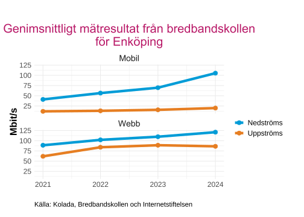
Ladda ner
{kind=link}
{kind=link}
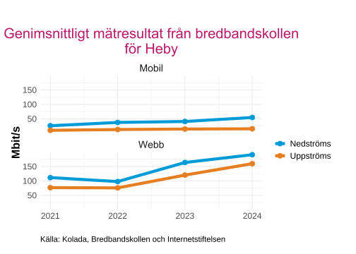
Ladda ner
{kind=link}
{kind=link}
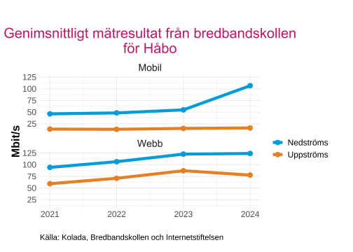
Ladda ner
{kind=link}
{kind=link}
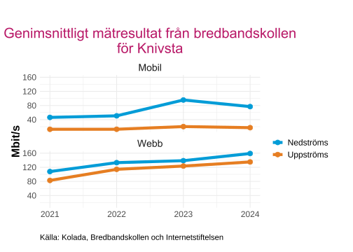
Ladda ner
{kind=link}
{kind=link}
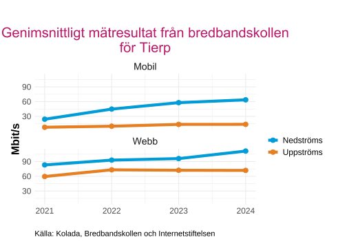
Ladda ner
{kind=link}
{kind=link}
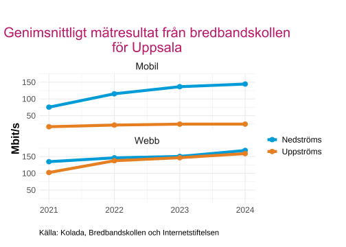
Ladda ner
{kind=link}
{kind=link}
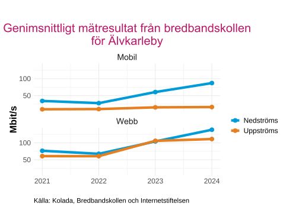
Ladda ner
{kind=link}
{kind=link}
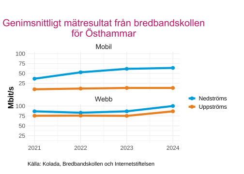
Ladda ner
{kind=link}
{kind=link}
Generellt är webbmätningarna snabbare än mobil, vilket är logiskt och kan förklaras av att mätningarna då sker via ethernet eller wifi och inte mobilnätet, samt att hårdvaran på datorer är kraftfullare än i mobiltelefoner.
När det gäller nedströms så visar alla kommuner en positiv utveckling med ökad hastighet på mätresultaten under perioden, för uppströms så syns det ej en utveckling för de flesta kommunerna när det gäller mobiltelefoner.
Mobilt
I detta avsnitt presenteras den genomsnittliga mobilmålstäckningen aggregerat över samtliga operatörer. Tabellen nedan gör det möjligt att sortera data efter kommun, år eller variabel. Eftersom data visar den sammanlagda mobiltäckningen för alla operatörer kan den ge en missvisande bild av den faktiska situationen, då enskilda användare inte har tillgång till, eller använder, samtliga operatörer samtidigt. Observera att inte alla kommuner har data för samtliga variabler och år.
Data är hämtat från Post- och telestyrelsen (PTS) (2025).
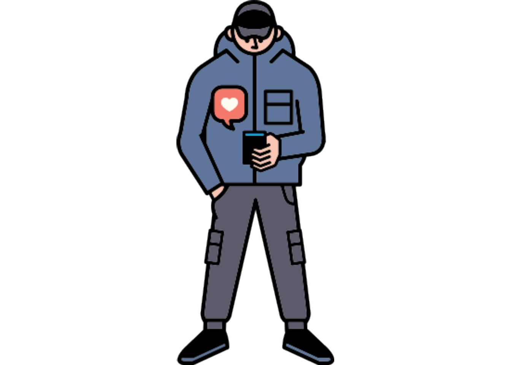
Variabler som ingår i mätningen
Mobilmålet givet aggregerad täckning av alla operatörer:
- Totalt, alla områden där man normalt befinner sig
- Statistisk tätort, 30 Mbit/s, handhållen terminal utomhus
- Statistisk småort, 10 Mbit/s, handhållen terminal utomhus
- Handelsområden, 30 Mbit/s, handhållen terminal utomhus
- Områden runt byggnader i glesbygd, 10 Mbit/s, handhållen terminal utomhus
- Områden runt byggnader i glesbygd med samhällsfunktion, 10 Mbit/s, handhållen terminal utomhus
- Europavägar, 30 Mbit/s, handhållen terminal inomhus
- Riksvägar, 30 Mbit/s, handhållen terminal inomhus
- Övriga bilvägar med hög trafik, 30 Mbit/s, handhållen terminal inomhus
- Övriga bilvägar med låg trafik, 10 Mbit/s, handhållen terminal inomhus
- Järnvägar med hög trafik, 30 Mbit/s, handhållen terminal inomhus
- Järnvägar med låg trafik, 10 Mbit/s, handhållen terminal inomhus
- Leder, spår och stigar, 10 Mbit/s, handhållen terminal utomhus
Totalt alla områden där man normalt befinner sig
Källa: Post- och telestyrelsen (PTS)
Per operatör
För att ge en mer rättvisande och praktiskt relevant beskrivning av användarupplevelsen så redovisas också resultaten av mobilmålet givet täckning per operatör. I Tabell 2 presenteras mobilmålet givet täckning för år 2024 uppdelat på operatörerna Telenor, Tele2, Telia Company och Tre.
Totalt alla områden där man normalt befinner sig
Källa: Post- och telestyrelsen (PTS)
Genom att titta på mobilmålstäckningen per operatör så ser vi att resultaten är lägre än de aggregerade i Tabell 1. Tele2 är den operatören som generellt har bäst täckning i länet sett till ‘Totalt alla områden där man normalt befinner sig’, på 94,36 %. Lägst genomsnittlig täckning har Tre, med 91,67 %, täckningen för Tre varierar dessutom mycket mellan kommunerna; operatören uppvisar både de högsta och de lägsta värdena i olika områden.
Tillgång till 5G
Detta avsnitt beskriver tillgången till 5G för hushåll i länets kommuner, uppdelat på områdestyp: tätbebyggda områden och glesbygd. Redovisningen omfattar både antal och andel hushåll med tillgång till 5G.
Genom att separera tätbebyggda områden och glesbygd synliggörs skillnader i utbyggnadstakt och täckningsgrad mellan olika typer av bebyggelse.
Data är hämtat från Rådet för främjande av kommunala analyser (2025) som hänvisar vidare till Post- och telestyrelsen (PTS) (2025).
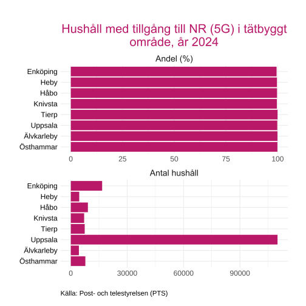
Ladda ner
{kind=link}
{kind=link}
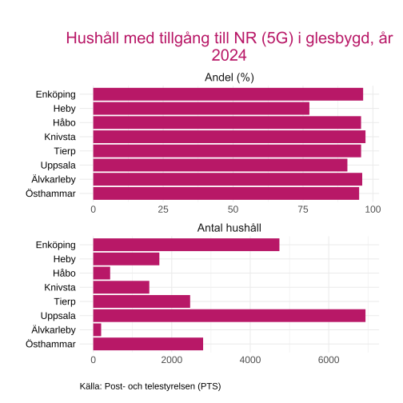
Ladda ner
{kind=link}
{kind=link}
I tätbyggda områden så har nästan alla hushåll tillgång till 5G i länets kommuner, men på glesbygden är det något lägre andelar, där Heby har den lägsta andelen på 77.3 procent och Uppsala kommun har näst lägst andel på 90.9 procent.
Notera att skalan på x-axeln skiljer sig för ‘Antal hushåll’ mellan Tätbyggt och Glesbygd.
Tekniker
Detta avsnitt beskriver tillgången till olika bredbandstekniker bland hushåll, uppdelat per kommun. Redovisningen omfattar både trådbundna tekniker (såsom xDSL, fiber och kabel-tv) och trådlösa tekniker (såsom HSPA, LTE, NR/5G och fast radio), samt kombinationer av dessa.
Graferna visar andel hushåll (%) med tillgång till respektive teknik, baserat på det senaste tillgängliga året i data. Endast tekniker med faktisk förekomst i kommunen redovisas i diagrammen.
Data är hämtat från Rådet för främjande av kommunala analyser (2025) som hänvisar vidare till Post- och telestyrelsen (PTS) (2025).
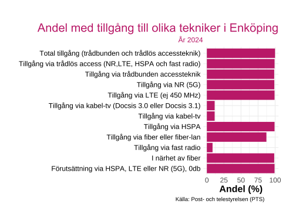
Ladda ner
{kind=link}
{kind=link}
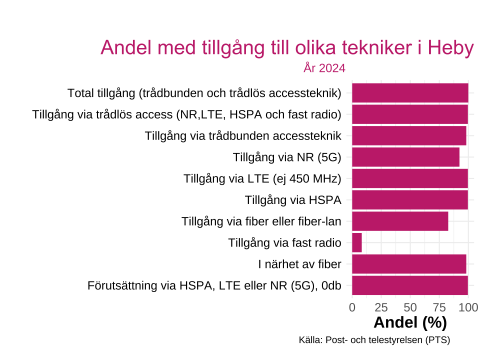
Ladda ner
{kind=link}
{kind=link}
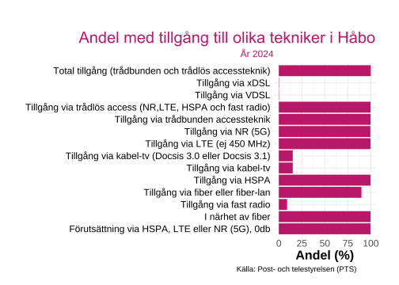
Ladda ner
{kind=link}
{kind=link}
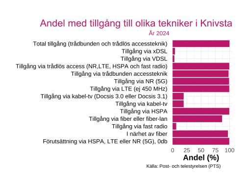
Ladda ner
{kind=link}
{kind=link}

Ladda ner
{kind=link}
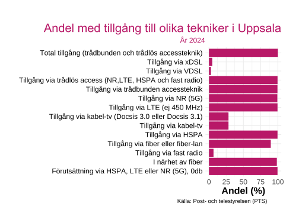
Ladda ner
{kind=link}
{kind=link}
Ladda ner
{kind=link}
{kind=link}
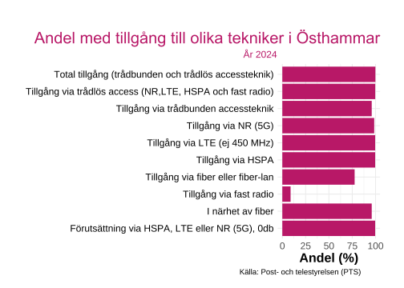
Ladda ner
{kind=link}
{kind=link}
Sett till de moderna bredbandsteknikerna har samtliga kommuner mycket höga andelar av hushåll med tillgång. De lägre andelarna återfinns främst för äldre tekniker såsom xDSL, VDSL och kabel-tv, vilket tydligt visar att dessa successivt fasas ut till förmån för fiber och nyare tekniker.
Bland de trådlösa teknikerna har HSPA en relativt hög andel, medan fast radio fortfarande har låg täckning i samtliga kommuner. LTE och NR (5G) har generellt hög tillgång, vilket speglar den moderna mobilnätsutbyggnaden och kompletterar fiber i områden där trådbunden anslutning inte är möjlig.
Karttjänster
Det finns i dagsläget ingen öppet tillgänglig rut- eller gridbaserad kartdata för bredbands- och mobiltäckning som kan användas direkt i denna analys. Den geografiska information som samlas in av myndigheter och operatörer publiceras främst i aggregerad form eller som interaktiva karttjänster utan möjlighet att ladda ner underliggande geodata.
För en mer detaljerad och platsbaserad bild av tillgång, täckning och upplevda hastigheter hänvisas därför till följande externa karttjänster:
Bredbandskollen – täcknings- och hastighetskarta
Visar användargenererade mätningar av faktisk internetprestanda (nedströms, uppströms och svarstid) för både fast och mobilt bredband.
https://www.bredbandskollen.se/karta/PTS Bredbandskartan
Post- och telestyrelsens officiella karttjänst som visar tillgång till fast bredband och mobiltäckning baserat på operatörernas inrapporterade uppgifter. Kartan ger en översikt av tekniker, hastighetsnivåer och täckningsgrad per område.
https://bredbandskartan.pts.se/Surf.nu – operatörernas täckningskartor
Sammanställning av mobiloperatörernas egna täckningskartor för olika tekniker (4G, 5G m.fl.), lämpad för jämförelser mellan operatörer på lokal nivå.
https://www.surf.nu/tackningskarta/
Dessa karttjänster kompletterar den statistiska analysen genom att ge en mer detaljerad och visuell bild av bredbands- och mobiltäckningen, men bör tolkas med hänsyn till att de baseras på olika datakällor, antaganden och mätmetoder.
Källor
Bredbandskollen. 2025. ”Bredbandskollen”. https://www.bredbandskollen.se/statistik/.
Internetstiftelsen. 2025. ”Internetstiftelsen”. https://internetstiftelsen.se/.
Post- och telestyrelsen (PTS). 2025. ”Post- och telestyrelsen – Säker och tillgänglig kommunikation för Sverige”. https://www.pts.se/.
Rådet för främjande av kommunala analyser. 2025. ”Kolada – Jämför och analysera nyckeltal i kommuner och regioner”. https://www.kolada.se/.